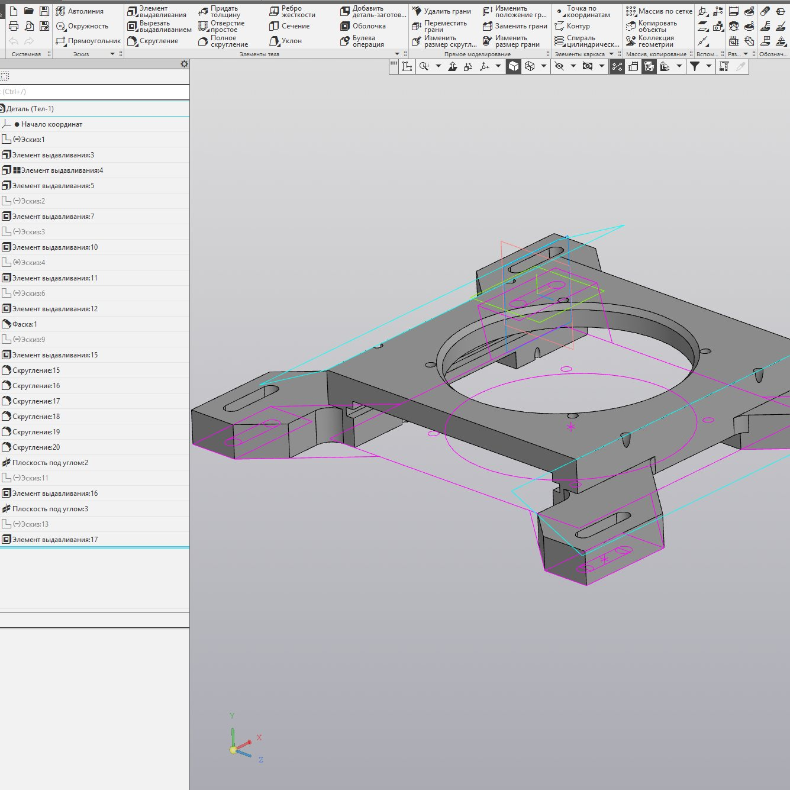
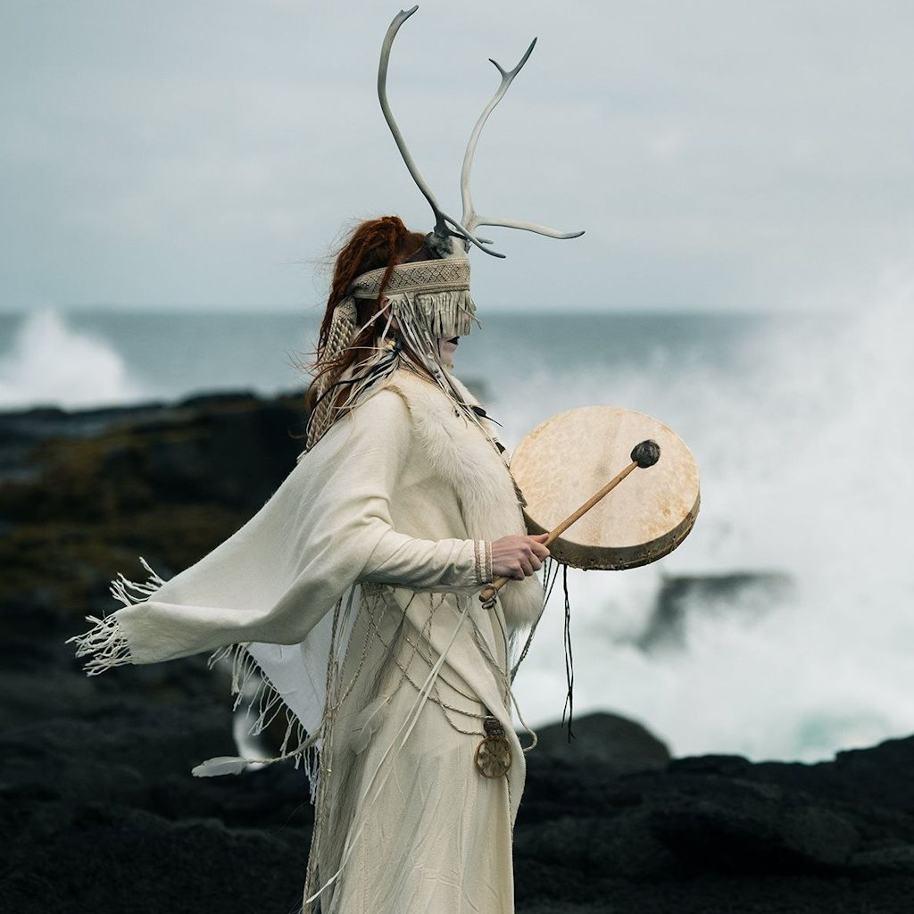
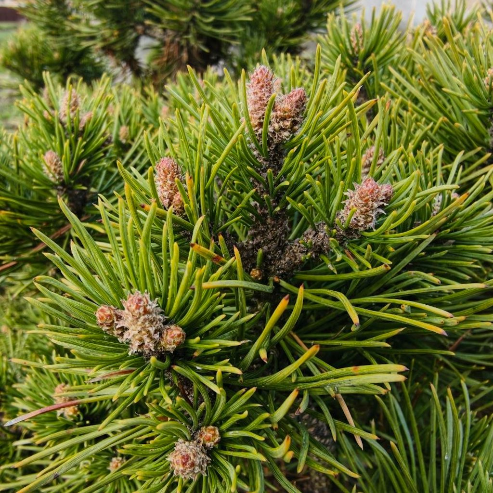
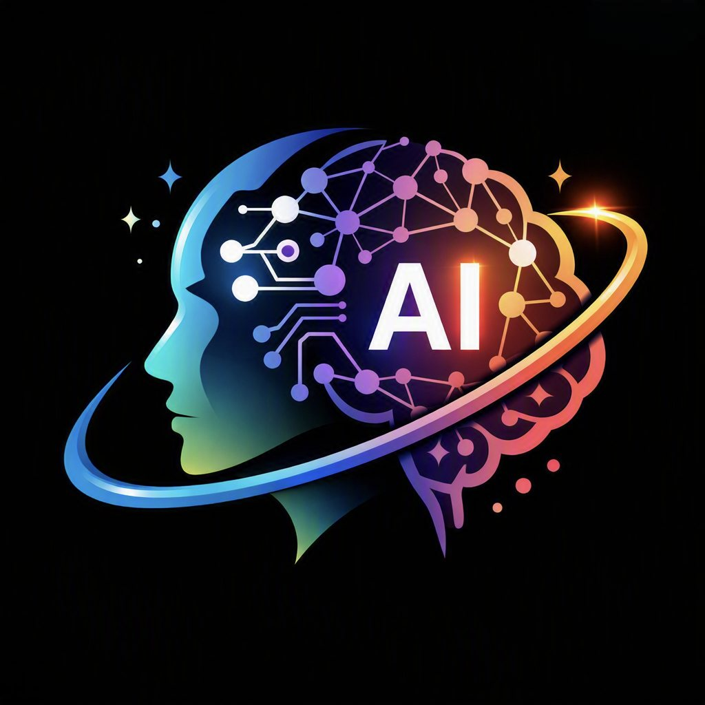

Александр
«Не ищи лёгкий путь. Ищи правильное решение»
Мастер смены · 3D · Инженерный подход
Обо мне
Здравствуйте. Меня зовут Александр. Я живу по правилу: «Не ищи лёгкий путь. Ищи правильное решение». Это не просто красивые слова — так я стараюсь подходить к любой задаче, будь то работа или личная жизнь.
Родился в Беларуси и проживаю в агрогородке Гожа уже 26 лет. Это место, с которым связана вся моя жизнь.
Я дотошный, практичный и всегда стремлюсь что-то улучшить. Мне важно докопаться до сути, а не остановиться на первом попавшемся решении. Когда сталкиваюсь с проблемой, я не пытаюсь просто её обойти — я ищу причину и разбираюсь, как решить её по-настоящему.
Я любопытный человек: люблю разбираться в сложных вещах, чинить то, что работает не так, и постоянно находить, что можно улучшить.
Многое в моём характере идёт из детства — переезд семьи на новое место в своё время многое изменил во мне, и во многом именно благодаря этому я стал тем, кем являюсь сейчас.
Интересные факты
- Я почти всю жизнь живу в одном месте — агрогородке Гожа в Беларуси, и это место много значит для меня.
- По образованию я столяр-станочник деревообрабатывающих станков.
- Закончил музыкальную школу — играл на аккордеоне.
- Работа в «ПНД групп» дала опыт в вещах, в которых раньше совсем не разбирался, и научила смотреть на процессы глубже.
- Служба в армии заложила во мне умение полагаться на себя — это не прошло бесследно.
- Я увлекаюсь 3D-печатью, музыкой и трендами ИИ — совсем разные вещи, но все они про одно: интересно разобраться, как это устроено.
Чем занимаюсь

Мастер смены
Сейчас я работаю мастером смены. Это как раз про то, что мне ближе всего: не тушить симптомы, а разбираться в причине — почему что-то пошло не так и как сделать, чтобы больше не повторялось. Отвечаю за то, чтобы смена прошла как надо, и за людей, которые рядом.

Пробую себя в 3D-моделировании
Учусь проектировать и печатать что-то своими руками — от идеи до готовой детали. Нравится сам процесс: когда модель в голове превращается в вещь, которую можно взять в руки.

Музыка
Музыка со мной с детства, но сейчас больше слушаю, чем играю. По вкусу тянет к неофолку: живые инструменты, атмосфера, без лишней глянцевости. Хорошая музыка — то, что помогает переключить голову после смены.

Природа
Люблю выбраться из повседневной суеты — в лес, к воде, подальше от шума. Природа помогает отключиться от задач и дедлайнов, побыть в тишине и просто выдохнуть. После этого голова снова ясная.

Тренды ИИ
ИИ для меня не хайп, а ещё одна вещь, в которой хочется разобраться по-настоящему — не просто пользоваться готовым, а понять, как это устроено внутри. Слежу за трендами, пробую сам, и чем глубже вникаю, тем яснее вижу, где реальная польза, а где просто шум.
«Со мной просто: дайте мне реальную проблему, а не полумеры для галочки — я докопаюсь до сути и найду решение. Не люблю поверхностный подход и работу «для вида». Цените в людях самостоятельность и умение разобраться в причине — мы сработаемся»